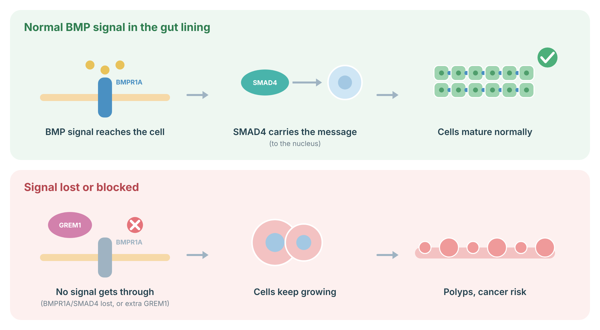
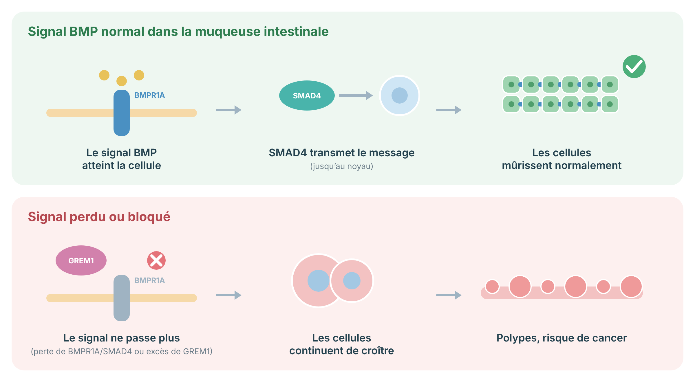

GREM1-Associated Hereditary Mixed Polyposis Syndrome
A practical prevention and surveillance protocol for people with a pathogenic GREM1 regulatory duplication or a clinically supported GREM1-associated polyposis diagnosis.
Understanding the condition
GREM1-associated hereditary mixed polyposis syndrome is a rare inherited condition. It can cause several types of colon polyps. Some polyps can become colorectal cancer. Regular colonoscopy can find and remove polyps before cancer develops.
The best-proven cause is a duplication in a control region just before the GREM1 gene. Not every change reported in or near GREM1 has the same meaning.
Biology and diagnostic scope
GREM1 encodes gremlin 1, an extracellular antagonist of bone morphogenetic protein signaling. The canonical disease mechanism is not loss of one coding copy. It is a cis-acting regulatory duplication upstream of GREM1 that causes inappropriate epithelial expression in the colon and perturbs crypt homeostasis.
The best-established pathogenic allele is the approximately 40-kb duplication spanning the 3′ end of SCG5 and an upstream enhancer region of GREM1, initially described as an Ashkenazi Jewish founder allele. Other partially overlapping regulatory duplications, including a 24-kb duplication, have been reported in non-founder families. Their classification should depend on exact breakpoints, overlap with the validated enhancer, segregation, phenotype, and laboratory interpretation.
Typical phenotype
The phenotype can include adenomatous, hyperplastic, serrated, juvenile-like, and mixed-histology colorectal polyps. Polyp number and age at onset vary widely. Published families are small and enriched for clinically affected individuals, so penetrance estimates are imprecise.
No reproducible, guideline-level extracolonic cancer spectrum has been established. Reports of duodenal, prostate, desmoid, or other tumours in individual families are insufficient to justify routine organ-specific screening solely because of a GREM1 duplication.
In the bowel lining, a signal called BMP tells cells to stop dividing and mature. The signal is received by BMPR1A on the cell surface and carried to the nucleus by SMAD4. If the signal is lost, or blocked by too much GREM1, cells keep growing and polyps form, which raises the risk of bowel cancer.
GREM1: In GREM1-related polyposis, an extra stretch of DNA makes too much GREM1 in the bowel lining, and GREM1 blocks the BMP signal.

Sources: Jaeger E, et al. Nat Genet 2012;44:699–703 (PubMed).
Lifetime risks by gene or subtype
The exact lifetime colorectal cancer risk is not known. The risk is clearly higher than average for people with the proven founder duplication. Risk estimates for other duplications are less certain. A change that is uncertain or does not affect the regulatory region may not increase risk.
| Genetic finding | Colorectal polyposis and cancer risk | Other cancers | Evidence quality |
|---|---|---|---|
| 40-kb upstream SCG5-GREM1 duplication Canonical Ashkenazi Jewish founder allele | Increased Lifetime percentage is not reliably quantified. Multiple families show mixed polyposis, early polyps, and colorectal cancer. | No established excess requiring syndrome-specific screening. | Moderate for causality; low for precise penetrance. |
| Other overlapping regulatory duplications For example, reported 24-kb duplication | Likely increased when pathogenic No reliable lifetime range. Management is usually extrapolated from the canonical duplication when the rearrangement overlaps the critical enhancer and fits the phenotype. | Not established. | Low; case reports and small kindreds. |
| Whole-gene duplication, coding variant, or VUS | Not established Do not assign HMPS risk from the gene name alone. | Not established. | Insufficient. |
| Clinical mixed polyposis without a confirmed pathogenic GREM1 rearrangement | Risk follows personal polyp burden and family history rather than a molecular diagnosis. | Depends on alternative diagnosis. | Variable; reassess differential diagnosis. |
Colorectal surveillance by subtype
For a confirmed pathogenic GREM1 regulatory duplication, start high-quality colonoscopy between ages 25 and 30. Repeat it every 2 to 3 years when no polyps are found. If polyps are found, repeat every 1 to 2 years. The interval may be shorter when polyps are numerous, large, advanced, or difficult to remove.
Children do not need routine colonoscopy only because a parent carries GREM1. Earlier testing or colonoscopy may be considered when the family has very early disease or the child has symptoms.
- RoutineHigh-quality colonoscopy at age 25 to 30. Consider an earlier start if a close relative developed polyposis or colorectal cancer before age 30, after individualized discussion.
- RoutineEvery 2 to 3 years if the examination is negative. A high-quality negative examination means adequate bowel preparation, cecal intubation, careful inspection, and complete documentation.
- RoutineEvery 1 to 2 years if polyps are found. Shorten further according to burden, pathology, completeness of resection, and endoscopist judgment.
- RoutineRemove and retrieve polyps when feasible. Record number, size, location, morphology, resection method, and histology. Mixed histology is expected and can help confirm the phenotype.
- IndividualizePaediatric or adolescent colonoscopy. Not routine. Consider only for symptoms, a striking childhood phenotype in the family, or a known carrier in a family with documented very early lesions.
- Not recommended routinelyUpper GI, pancreatic, thyroid, urinary tract, or gynaecologic surveillance solely for GREM1. Use population guidance and personal or family history.
Use the same colonoscopy framework when the variant overlaps the validated enhancer region, the laboratory classifies it as pathogenic or likely pathogenic, and the personal or family phenotype is concordant. Document that this is extrapolation from limited evidence.
Base colonoscopy on the patient’s personal polyp history and family history. Seek variant reinterpretation, breakpoint clarification, or testing of informative relatives. Do not use a VUS for predictive testing in unaffected relatives.
Symptoms that require assessment between scheduled examinations
Investigate rectal bleeding, persistent change in bowel habit, unexplained iron-deficiency anaemia, unexplained weight loss, persistent abdominal pain, or other concerning symptoms without waiting for the next surveillance date.
Risk-reducing surgery and medical considerations
Most people can be managed with colonoscopy and polyp removal. Surgery may be needed when there are too many polyps to remove safely, when advanced changes are found, or when cancer develops. The operation should be chosen with a colorectal surgeon and should fit the location and burden of disease.
Indications for colorectal surgical consultation
- Routine referralPolyp burden cannot be controlled endoscopically, repeated procedures are becoming unsafe or incomplete, or adherence to the required intensity is not feasible.
- Routine referralHigh-grade dysplasia, cancer, an unresectable lesion, or recurrent advanced neoplasia.
- IndividualizeRapidly increasing polyp number, difficult location, or substantial family history that changes the balance of endoscopy and surgery.
There is no evidence supporting prophylactic colectomy in an asymptomatic carrier with a manageable or absent polyp burden. Surgical extent should be phenotype-driven. Options may include segmental colectomy or subtotal colectomy with ileorectal anastomosis, depending on cancer location, distribution of polyps, rectal burden, age, function, and patient preference. The retained colorectum requires lifelong surveillance.
Hormonal and reproductive medical considerations
No GREM1-specific restriction on contraception, menopausal hormone therapy, pregnancy, or fertility treatment is established. Decisions should follow usual medical indications and the patient’s broader cancer and thrombotic risk profile.
Chemoprevention and medical prevention
No medicine has been proven to prevent cancer specifically in GREM1-associated polyposis. Aspirin should not replace colonoscopy. Some people may take aspirin for another reason, but the benefits and bleeding risks should be reviewed with their clinician.
Aspirin
There is no GREM1-specific randomized evidence and no guideline-mandated aspirin regimen for this syndrome. Evidence from Lynch syndrome should not be assumed to apply. Do not prescribe aspirin solely as a substitute for surveillance.
Other agents
There is no established role for celecoxib, sulindac, metformin, calcium, vitamin D, resistant starch, microbiome products, or supplements as GREM1-specific chemoprevention outside a clinical trial. These agents do not replace endoscopic removal of polyps.
Genetic counselling
GREM1-associated hereditary mixed polyposis syndrome is usually inherited in an autosomal dominant way. Each child of a carrier has a 1 in 2 chance of inheriting the same pathogenic duplication. Testing relatives can identify who needs early colonoscopy and who can usually follow average-risk screening.
Confirm the familial finding
Obtain the original laboratory report and record exact genomic coordinates, genome build, duplicated genes or regulatory elements, classification, and testing method. Some multigene panels may not detect all upstream structural variants. Targeted familial testing must be capable of detecting the specific rearrangement.
Cascade testing
- Offer targeted testing to adult first-degree relatives, then extend through the pedigree.
- For a confirmed pathogenic familial duplication, a true negative relative generally returns to population screening unless personal or other family history indicates otherwise.
- Do not use a VUS for predictive testing or irreversible management decisions.
- Testing minors is usually deferred because routine surveillance begins in adulthood. Earlier testing can be reasonable when a family has documented childhood-onset clinically important polyposis and the result would change care.
Reproductive options
Discuss natural conception with prenatal diagnosis, in vitro fertilization with preimplantation genetic testing for monogenic disease, use of donor gametes, adoption, and choosing not to test. These are optional and values-sensitive. Referral to reproductive genetics is appropriate before pregnancy when desired.
Pedigree
Update a three-generation pedigree with colorectal polyps, histology, cancer sites, ages at diagnosis, colectomy, ancestry, and molecular test results. Revisit the pedigree because variant interpretation and family diagnoses can change.
Lifestyle and nutrition
Healthy habits cannot remove inherited risk, but they may lower general colorectal cancer risk and improve overall health. Avoid smoking. Limit alcohol. Stay active. Aim for a healthy pattern of eating with vegetables, fruit, whole grains, legumes, and less processed meat.
Use standard colorectal cancer prevention counselling. Encourage regular physical activity, avoidance of tobacco, limitation of alcohol, maintenance of a healthy weight without restrictive dieting, and a dietary pattern rich in fibre-containing plant foods. Limit processed meat and frequent large portions of red meat. Address iron deficiency medically rather than with diet alone when bleeding or advanced neoplasia is possible.
No diet, probiotic, fasting regimen, or supplement has been shown to neutralize the inherited risk from a pathogenic GREM1 regulatory duplication. Lifestyle advice must be framed as complementary to colonoscopy.
Management when colorectal cancer is diagnosed
If cancer develops, treatment is based mainly on the cancer’s stage, location, and tumour test results. The inherited GREM1 finding helps with family counselling and with planning how much colon remains at risk. It does not automatically mean that immunotherapy will work.
Manage colorectal cancer according to contemporary oncology and surgical standards. Perform universal tumour mismatch repair or microsatellite instability testing as recommended for colorectal cancer. A germline GREM1 duplication does not itself predict mismatch repair deficiency or response to immune checkpoint inhibition.
Surgical planning should account for synchronous polyps, future metachronous risk, ability to survey the remaining colon and rectum, and patient preferences. Re-review germline testing when the phenotype is more severe than expected or tumour findings suggest an additional syndrome.
Emerging and investigational prevention
Researchers are studying how GREM1 changes colon stem-cell signalling and whether this pathway can be targeted. These approaches are not proven for prevention and should only be used in a research study.
Trial-only approaches
Potential strategies include modulation of BMP-GREM1 signalling, enhancer-directed approaches, organoid-based risk modelling, liquid biomarkers, and artificial intelligence-assisted polyp detection. None has validated clinical utility for preventing GREM1-associated cancer. Do not use tumour GREM1 expression studies or experimental anti-GREM1 agents to guide preventive care outside a research protocol.
Summary of recommendations
The most important action is regular high-quality colonoscopy. The exact genetic change matters. Confirm that the result is a proven disease-causing regulatory duplication before applying this protocol.
Canonical 40-kb duplication
Colonoscopy at 25 to 30. Repeat every 2 to 3 years if negative and every 1 to 2 years if polyps are present. Consider surgery when endoscopic control is not feasible.
Other pathogenic regulatory duplication
Usually use the same framework, but label the recommendation as extrapolated and integrate breakpoints, phenotype, and family history.
VUS or unproven GREM1 finding
Do not intensify care from the genotype alone. Manage personal and family history, and pursue expert reinterpretation.
Across all groups
Investigate symptoms promptly, remove and document polyps carefully, update the pedigree, support cascade testing, and use general healthy-lifestyle guidance.
References
This protocol uses current guideline recommendations and the limited published GREM1 literature. Because the syndrome is rare, much of the management is expert consensus or extrapolation.
- National Comprehensive Cancer Network. NCCN Clinical Practice Guidelines in Oncology: Genetic/Familial High-Risk Assessment: Colorectal, Endometrial, Esophageal, and Gastric. Version 1.2026. Published June 16, 2026.
- Hodan R, Gupta S, Weiss JM, et al. Genetic/Familial High-Risk Assessment: Colorectal, Endometrial, and Gastric, Version 3.2024, NCCN Clinical Practice Guidelines in Oncology. J Natl Compr Canc Netw. 2024;22(10):695-711.
- Jaeger E, Leedham S, Lewis A, et al. Hereditary mixed polyposis syndrome is caused by a 40-kb upstream duplication that leads to increased and ectopic expression of the BMP antagonist GREM1. Nat Genet. 2012;44(6):699-703.
- Lieberman S, Walsh T, Schechter M, et al. Features of patients with hereditary mixed polyposis syndrome caused by duplication of GREM1 and implications for screening and surveillance. Gastroenterology. 2017;152(8):1876-1880.e1.
- McKenna DB, van den Akker J, Zhou AY, et al. Identification of a novel GREM1 duplication in a patient with multiple colon polyps. Fam Cancer. 2019;18(1):63-66.
- Rohlin A, Eiengård F, Lundstam U, et al. GREM1 and POLE variants in hereditary colorectal cancer syndromes. Genes Chromosomes Cancer. 2016;55(1):95-106.
- Lewis A, Freeman-Mills L, de la Calle-Mustienes E, et al. A polymorphic enhancer near GREM1 influences bowel cancer risk through differential CDX2 and TCF7L2 binding. Cell Rep. 2014;8(4):983-990.
- ClinGen. Hereditary mixed polyposis syndrome 1: Adult Clinical Actionability Summary Report. Accessed July 21, 2026.
- Monahan KJ, Bradshaw N, Dolwani S, et al. Guidelines for the management of hereditary colorectal cancer from the British Society of Gastroenterology, Association of Coloproctology of Great Britain and Ireland, and United Kingdom Cancer Genetics Group. Gut. 2020;69(3):411-444.
- Fedirko V, Jenab M, Murphy N, et al. Alcohol drinking and colorectal cancer risk: an overall and dose-response meta-analysis of published studies. Ann Oncol. 2011;22(9):1958-1972.
Syndrome de polypose mixte héréditaire associé à GREM1
Un protocole pratique de prévention et de surveillance pour les personnes porteuses d’une duplication régulatrice pathogène de GREM1 ou ayant un diagnostic cliniquement étayé de polypose associée à GREM1.
Comprendre la maladie
Le syndrome de polypose mixte héréditaire associé à GREM1 est une maladie héréditaire rare. Il peut causer plusieurs types de polypes du côlon. Certains polypes peuvent évoluer vers un cancer colorectal. Une coloscopie régulière permet de détecter et d’enlever les polypes avant qu’un cancer apparaisse.
La cause la mieux démontrée est une duplication dans une région de contrôle située juste avant le gène GREM1. Toutes les variations signalées dans ou près de GREM1 n’ont pas la même signification.
Biologie et portée diagnostique
GREM1 code la gremlin 1, un antagoniste extracellulaire de la voie des protéines morphogénétiques osseuses. Le mécanisme classique n’est pas la perte d’une copie codante. Il s’agit d’une duplication régulatrice en amont de GREM1 qui entraîne une expression épithéliale inappropriée dans le côlon et perturbe l’homéostasie des cryptes.
L’allèle pathogène le mieux établi est une duplication d’environ 40 kb englobant l’extrémité 3′ de SCG5 et une région amplificatrice en amont de GREM1, initialement décrite comme un allèle fondateur chez des personnes d’ascendance juive ashkénaze. D’autres duplications régulatrices partiellement chevauchantes, dont une duplication de 24 kb, ont été rapportées. Leur classification doit tenir compte des points de cassure exacts, du chevauchement avec l’amplificateur validé, de la ségrégation, du phénotype et de l’interprétation du laboratoire.
Phénotype typique
Le phénotype peut comprendre des polypes adénomateux, hyperplasiques, festonnés, de type juvénile et d’histologie mixte. Le nombre de polypes et l’âge d’apparition varient beaucoup. Les familles publiées sont peu nombreuses et enrichies en personnes atteintes, ce qui rend les estimations de pénétrance imprécises.
Aucun spectre reproductible de cancers extracolorectaux ne justifie actuellement un dépistage systématique propre à GREM1.
Dans la muqueuse intestinale, un signal appelé BMP indique aux cellules d’arrêter de se diviser et de mûrir. Le signal est capté par BMPR1A à la surface de la cellule puis transmis au noyau par SMAD4. Si le signal est perdu, ou bloqué par un excès de GREM1, les cellules continuent de croître et des polypes se forment, ce qui augmente le risque de cancer colorectal.
GREM1: Dans la polypose liée à GREM1, un segment d’ADN supplémentaire fait produire trop de GREM1 dans la muqueuse intestinale, et GREM1 bloque le signal BMP.

Sources : Jaeger E, et al. Nat Genet 2012;44:699–703 (PubMed).
Risques au cours de la vie selon le sous-type
Le risque exact de cancer colorectal au cours de la vie n’est pas connu. Il est clairement plus élevé que la moyenne chez les personnes porteuses de la duplication fondatrice bien établie. Les estimations pour les autres duplications sont moins certaines. Une variation incertaine ou qui ne touche pas la région régulatrice peut ne pas augmenter le risque.
| Résultat génétique | Risque de polypose et de cancer colorectal | Autres cancers | Qualité des données |
|---|---|---|---|
| Duplication de 40 kb en amont de SCG5-GREM1 Allèle fondateur ashkénaze classique | Accru Le pourcentage au cours de la vie n’est pas quantifié de façon fiable. Plusieurs familles présentent une polypose mixte, des polypes précoces et des cancers colorectaux. | Aucun excès établi nécessitant un dépistage spécifique. | Modérée pour la causalité; faible pour la pénétrance précise. |
| Autres duplications régulatrices chevauchantes Par exemple, duplication de 24 kb | Probablement accru si pathogène Aucune estimation fiable. La prise en charge est généralement extrapolée de la duplication classique. | Non établi. | Faible; rapports de cas et petites familles. |
| Duplication complète du gène, variant codant ou VUS | Non établi Ne pas attribuer un risque de polypose à partir du nom du gène seulement. | Non établi. | Insuffisante. |
| Polypose mixte clinique sans réarrangement pathogène confirmé | Le risque dépend du nombre de polypes et des antécédents familiaux. | Dépend du diagnostic différentiel. | Variable. |
Surveillance colorectale selon le sous-type
En présence d’une duplication régulatrice pathogène confirmée de GREM1, commencer une coloscopie de grande qualité entre 25 et 30 ans. La répéter tous les 2 à 3 ans si aucun polype n’est trouvé. Si des polypes sont trouvés, la répéter tous les 1 à 2 ans. L’intervalle peut être plus court si les polypes sont nombreux, gros, avancés ou difficiles à enlever.
Les enfants n’ont pas besoin d’une coloscopie systématique uniquement parce qu’un parent est porteur de GREM1. Une évaluation plus précoce peut être envisagée en présence de symptômes ou d’une atteinte familiale très précoce.
- SystématiqueColoscopie de grande qualité entre 25 et 30 ans. Envisager un début plus précoce si un proche a présenté une polypose ou un cancer colorectal avant 30 ans.
- SystématiqueTous les 2 à 3 ans si l’examen est négatif.
- SystématiqueTous les 1 à 2 ans si des polypes sont présents. Raccourcir selon le nombre, l’histologie et la qualité de la résection.
- SystématiqueEnlever et récupérer les polypes lorsque possible. Documenter le nombre, la taille, le site, la morphologie et l’histologie.
- IndividualiserColoscopie pédiatrique ou adolescente. Non systématique. À considérer pour des symptômes ou un phénotype familial très précoce.
- Non recommandé systématiquementSurveillance digestive haute, pancréatique, thyroïdienne, urinaire ou gynécologique uniquement en raison de GREM1.
Utiliser généralement le même cadre lorsque le variant chevauche la région amplificatrice validée, que le laboratoire le classe comme pathogène ou probablement pathogène et que le phénotype est concordant. Documenter qu’il s’agit d’une extrapolation.
Fonder la coloscopie sur les antécédents personnels de polypes et les antécédents familiaux. Demander une réinterprétation du variant au besoin.
Symptômes nécessitant une évaluation avant le prochain examen prévu
Évaluer sans attendre les saignements rectaux, un changement persistant des habitudes intestinales, une anémie ferriprive inexpliquée, une perte de poids inexpliquée ou une douleur abdominale persistante.
Chirurgie de réduction du risque et considérations médicales
La plupart des personnes peuvent être suivies par coloscopie avec ablation des polypes. Une chirurgie peut être nécessaire lorsqu’il y a trop de polypes pour les enlever de façon sécuritaire, lorsqu’une lésion avancée est trouvée ou lorsqu’un cancer se développe. Le choix de l’opération doit être fait avec un chirurgien colorectal.
Indications de consultation en chirurgie colorectale
- Référence systématiqueLe nombre de polypes ne peut plus être contrôlé par endoscopie ou les procédures répétées deviennent incomplètes ou dangereuses.
- Référence systématiqueDysplasie de haut grade, cancer, lésion non résécable ou néoplasie avancée récidivante.
- IndividualiserAugmentation rapide du nombre de polypes ou antécédents familiaux majeurs.
Aucune donnée n’appuie une colectomie prophylactique chez un porteur asymptomatique dont le nombre de polypes est absent ou contrôlable. L’étendue de la chirurgie doit dépendre du phénotype. Le côlon ou le rectum conservé doit être surveillé toute la vie.
Considérations hormonales et reproductives
Aucune restriction propre à GREM1 concernant la contraception, l’hormonothérapie de la ménopause, la grossesse ou les traitements de fertilité n’est établie.
Chimioprévention et prévention médicale
Aucun médicament n’a démontré qu’il prévient spécifiquement le cancer dans la polypose associée à GREM1. L’aspirine ne remplace pas la coloscopie. Certaines personnes prennent de l’aspirine pour une autre raison, mais les bénéfices et les risques de saignement doivent être revus avec leur clinicien.
Aspirine
Il n’existe aucune étude randomisée propre à GREM1 ni aucun schéma d’aspirine obligatoire dans les lignes directrices. Les données du syndrome de Lynch ne doivent pas être extrapolées automatiquement.
Autres agents
Le célécoxib, le sulindac, la metformine, le calcium, la vitamine D, l’amidon résistant, les produits du microbiome et les suppléments n’ont aucun rôle établi comme chimioprévention propre à GREM1 hors essai clinique.
Conseil génétique
Le syndrome de polypose mixte héréditaire associé à GREM1 se transmet habituellement de façon autosomique dominante. Chaque enfant d’une personne porteuse a une probabilité de 1 sur 2 d’hériter de la même duplication pathogène. Le dépistage familial permet de savoir qui a besoin d’une coloscopie précoce.
Confirmer le résultat familial
Obtenir le rapport original et consigner les coordonnées génomiques exactes, la version du génome, les éléments dupliqués, la classification et la méthode de test. Certains panels multigéniques ne détectent pas toutes les variations structurales en amont.
Dépistage en cascade
- Offrir un test ciblé aux apparentés adultes du premier degré, puis élargir dans la famille.
- Un apparenté véritablement négatif pour une duplication familiale pathogène peut généralement suivre le dépistage de la population, sauf indication liée à ses propres antécédents.
- Ne pas utiliser un VUS pour un test prédictif ou une décision irréversible.
- Le test chez les mineurs est généralement reporté, sauf si une atteinte infantile documentée dans la famille modifierait les soins.
Options reproductives
Discuter de la conception naturelle avec diagnostic prénatal, de la fécondation in vitro avec test génétique préimplantatoire, du don de gamètes, de l’adoption et du choix de ne pas faire de test. Ces options sont facultatives.
Arbre généalogique
Mettre à jour un arbre sur trois générations avec les polypes colorectaux, leur histologie, les cancers, les âges au diagnostic, les colectomies, l’ascendance et les résultats moléculaires.
Mode de vie et nutrition
Les habitudes saines ne suppriment pas le risque héréditaire, mais elles peuvent réduire le risque colorectal général et améliorer la santé. Évitez le tabac. Limitez l’alcool. Restez actif. Favorisez les légumes, les fruits, les grains entiers et les légumineuses, et réduisez les viandes transformées.
Donner les conseils standards de prévention du cancer colorectal. Encourager l’activité physique, l’absence de tabac, la limitation de l’alcool, le maintien d’un poids favorable à la santé sans régime restrictif et une alimentation riche en fibres végétales. Limiter les viandes transformées et les grandes portions fréquentes de viande rouge.
Aucun régime, probiotique, jeûne ou supplément n’a démontré qu’il neutralise le risque héréditaire. Le mode de vie complète la coloscopie, sans la remplacer.
Prise en charge lorsqu’un cancer colorectal est diagnostiqué
Si un cancer se développe, le traitement dépend surtout du stade, du site et des résultats des analyses de la tumeur. Le résultat GREM1 aide au conseil familial et à planifier la surveillance du côlon restant. Il ne signifie pas automatiquement que l’immunothérapie fonctionnera.
Traiter le cancer colorectal selon les normes oncologiques et chirurgicales contemporaines. Effectuer le test universel de réparation des mésappariements ou d’instabilité microsatellitaire recommandé pour le cancer colorectal. Une duplication germinale de GREM1 ne prédit pas à elle seule une déficience MMR ni une réponse aux inhibiteurs de points de contrôle immunitaire.
La planification chirurgicale doit tenir compte des polypes synchrones, du risque métachrone, de la possibilité de surveiller le côlon et le rectum restants et des préférences de la personne.
Prévention émergente et expérimentale
Les chercheurs étudient comment GREM1 modifie la signalisation des cellules souches du côlon et si cette voie peut être ciblée. Ces approches ne sont pas prouvées pour la prévention et doivent être utilisées uniquement dans une étude de recherche.
Approches réservées aux essais cliniques
Les stratégies potentielles comprennent la modulation de la voie BMP-GREM1, les approches ciblant les amplificateurs, les organoïdes, les biomarqueurs liquides et la détection des polypes assistée par intelligence artificielle. Aucune n’a une utilité clinique validée pour prévenir le cancer associé à GREM1.
Résumé des recommandations
L’action la plus importante est une coloscopie régulière de grande qualité. La variation génétique exacte est importante. Il faut confirmer qu’il s’agit d’une duplication régulatrice pathogène avant d’appliquer ce protocole.
Duplication classique de 40 kb
Coloscopie entre 25 et 30 ans. Répéter tous les 2 à 3 ans si elle est négative et tous les 1 à 2 ans si des polypes sont présents. Envisager la chirurgie si le contrôle endoscopique n’est plus possible.
Autre duplication régulatrice pathogène
Utiliser habituellement le même cadre, en indiquant qu’il s’agit d’une extrapolation et en intégrant les points de cassure, le phénotype et les antécédents familiaux.
VUS ou résultat GREM1 non prouvé
Ne pas intensifier les soins selon le génotype seul. Prendre en charge les antécédents personnels et familiaux et demander une réinterprétation spécialisée.
Pour tous
Évaluer rapidement les symptômes, enlever et documenter les polypes, mettre à jour l’arbre familial, soutenir le dépistage en cascade et conseiller un mode de vie sain.
Références
Ce protocole s’appuie sur les recommandations actuelles et sur la littérature limitée concernant GREM1. Comme le syndrome est rare, une partie importante de la prise en charge repose sur un consensus d’experts ou une extrapolation.
- National Comprehensive Cancer Network. NCCN Clinical Practice Guidelines in Oncology: Genetic/Familial High-Risk Assessment: Colorectal, Endometrial, Esophageal, and Gastric. Version 1.2026. Published June 16, 2026.
- Hodan R, Gupta S, Weiss JM, et al. Genetic/Familial High-Risk Assessment: Colorectal, Endometrial, and Gastric, Version 3.2024, NCCN Clinical Practice Guidelines in Oncology. J Natl Compr Canc Netw. 2024;22(10):695-711.
- Jaeger E, Leedham S, Lewis A, et al. Hereditary mixed polyposis syndrome is caused by a 40-kb upstream duplication that leads to increased and ectopic expression of the BMP antagonist GREM1. Nat Genet. 2012;44(6):699-703.
- Lieberman S, Walsh T, Schechter M, et al. Features of patients with hereditary mixed polyposis syndrome caused by duplication of GREM1 and implications for screening and surveillance. Gastroenterology. 2017;152(8):1876-1880.e1.
- McKenna DB, van den Akker J, Zhou AY, et al. Identification of a novel GREM1 duplication in a patient with multiple colon polyps. Fam Cancer. 2019;18(1):63-66.
- Rohlin A, Eiengård F, Lundstam U, et al. GREM1 and POLE variants in hereditary colorectal cancer syndromes. Genes Chromosomes Cancer. 2016;55(1):95-106.
- Lewis A, Freeman-Mills L, de la Calle-Mustienes E, et al. A polymorphic enhancer near GREM1 influences bowel cancer risk through differential CDX2 and TCF7L2 binding. Cell Rep. 2014;8(4):983-990.
- ClinGen. Hereditary mixed polyposis syndrome 1: Adult Clinical Actionability Summary Report. Accessed July 21, 2026.
- Monahan KJ, Bradshaw N, Dolwani S, et al. Guidelines for the management of hereditary colorectal cancer from the British Society of Gastroenterology, Association of Coloproctology of Great Britain and Ireland, and United Kingdom Cancer Genetics Group. Gut. 2020;69(3):411-444.
- Fedirko V, Jenab M, Murphy N, et al. Alcohol drinking and colorectal cancer risk: an overall and dose-response meta-analysis of published studies. Ann Oncol. 2011;22(9):1958-1972.